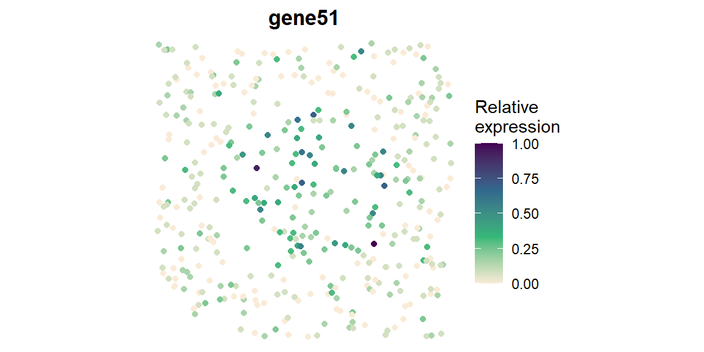
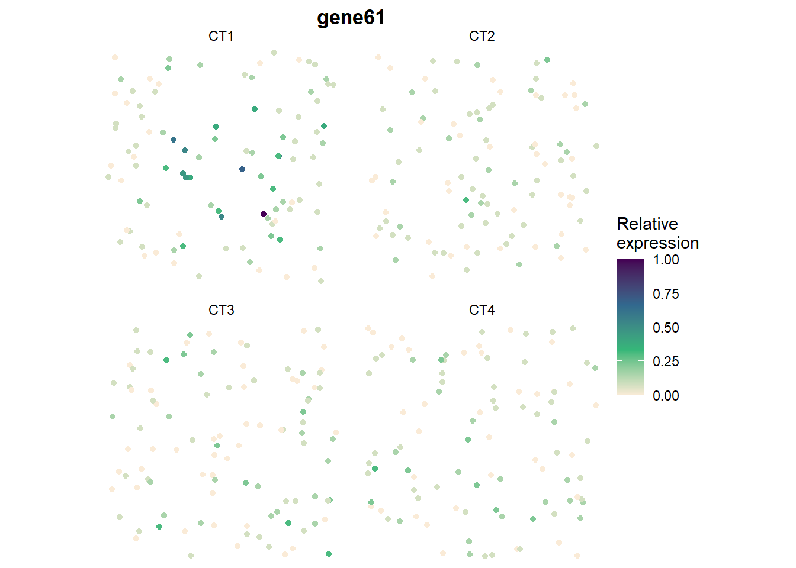

This page runs the complete SIGNAL workflow on the simulated example data that ships with the package. It takes about a minute.
library(SIGNAL)
data(SIGNAL_example)
str(SIGNAL_example, max.level = 1)
#> List of 4
#> $ counts : int [1:70, 1:400] 2 0 0 0 3 1 1 2 0 0 ...
#> ..- attr(*, "dimnames")=List of 2
#> $ location : num [1:400, 1:2] 0.733 0.476 0.514 0.498 0.78 ...
#> ..- attr(*, "dimnames")=List of 2
#> $ celltype : Factor w/ 4 levels "CT1","CT2","CT3",..: 4 2 4 4 3 2 2 4 2 2 ...
#> $ gene_type: Named chr [1:70] "null" "null" "null" "null" ...
#> ..- attr(*, "names")= chr [1:70] "gene1" "gene2" "gene3" "gene4" ...
table(SIGNAL_example$gene_type)
#>
#> celltype ctSVG null spatial
#> 10 10 40 10The example has 70 genes on 400 cells of four cell types
(CT1–CT4): 40 null genes, 10 cell-type genes,
10 spatial genes (high in a hotspot for all cell types) and 10 ctSVGs
(high in the hotspot for CT1 only).
SIGNAL needs three inputs:
counts: a genes \(\times\) cells matrix of raw counts (base
or sparse matrix);location: a cells \(\times\) 2 matrix of spatial
coordinates;celltype: one cell-type label per cell, or a cells
\(\times\) cell types matrix of
cell-type proportions (for spot-level data).obj <- createSIGNALobject(counts = SIGNAL_example$counts,
location = SIGNAL_example$location,
celltype = SIGNAL_example$celltype)
obj
#> SIGNAL object: SIGNAL
#> 70 genes x 400 cells, 4 cell types
#> Steps run: noneGenes expressed in fewer than min_cells cells are
removed. Each gene is then converted to normal scores,
qnorm((rank(y) - 0.5) / n); tied counts share their average
rank.
Sparse data with many zeros: all zeros of a gene
then share one score, which can make the spatial test anti-conservative.
For such data use transform = "impute", which breaks tied
zeros at random and averages the scores over n_imp draws
(seed makes it reproducible).
obj <- SIGNAL_preprocess(obj, min_cells = 10, seed = 1)
#> Transforming 70 genes (rank)The cell-type kernel is a Hamming kernel for
cell-type labels and a Gaussian kernel for cell-type proportions
(celltype_distance = "auto"). The spatial
kernels are 11 kernels at different scales: 5 Gaussian, 5
Matérn and a thin-plate spline. With more than 6,000 cells, SIGNAL uses
a single Gaussian kernel instead.
obj <- SIGNAL_kernel(obj)
#> Building spatial kernels for 400 cells
names(obj@spatial_kernels)
#> [1] "gaussian_1" "matern_1" "gaussian_2" "matern_2" "gaussian_3"
#> [6] "matern_3" "gaussian_4" "matern_4" "gaussian_5" "matern_5"
#> [11] "spline"The overall test asks whether a gene varies with cell type, space or both. It runs for every gene and kernel, and the p-values are combined over the 11 kernels with the Cauchy combination test.
obj <- SIGNAL_overall(obj, ncores = 2, verbose = FALSE)
head(obj@result)
#> p_overall p_celltype p_spatial p_ctSVG
#> gene1 0.96179774 NA NA NA
#> gene2 0.04019524 NA NA NA
#> gene3 0.39417392 NA NA NA
#> gene4 0.44451921 NA NA NA
#> gene5 0.56059044 NA NA NA
#> gene6 0.15656836 NA NA NAp_overall is filled in for every gene; the component
p-values are still NA. Call a gene spatially variable when
its BH-adjusted overall p-value is below 0.05:
detected <- rownames(obj@result)[p.adjust(obj@result$p_overall, "BH") < 0.05]
length(detected)
#> [1] 30The cell-type, spatial and ctSVG tests find the source of the variation. They are the costly part, so run them only for the detected genes:
obj <- SIGNAL_component(obj, genes = detected, ncores = 2, verbose = FALSE)
head(obj@result[detected, ])
#> p_overall p_celltype p_spatial p_ctSVG
#> gene41 1.110223e-16 1.110223e-16 0.46426229 0.4453915
#> gene42 1.110223e-16 1.110223e-16 0.91175721 0.1200590
#> gene43 1.110223e-16 1.110223e-16 0.13858701 0.8028213
#> gene44 1.110223e-16 1.110223e-16 0.09622402 0.8478342
#> gene45 1.110223e-16 1.110223e-16 0.71558763 0.4785695
#> gene46 1.110223e-16 1.110223e-16 0.78241878 0.9205988Genes that were not detected keep NA. The result is a
table with one row per gene and the four p-values, not adjusted for
multiple testing; save it with
write.csv(obj@result, "signal.csv").
SIGNAL_test() runs steps 4 and 5 for all genes in one
call.
Label each detected gene with every effect whose p-value is below 0.05, and compare with the true gene types:
res <- obj@result
category <- rep("Not significant", nrow(res))
names(category) <- rownames(res)
category[detected] <- apply(res[detected, c("p_celltype", "p_spatial", "p_ctSVG")] < 0.05, 1,
function(f) paste(c("CellType", "Spatial", "ctSVG")[f], collapse = "+"))
type <- SIGNAL_example$gene_type[rownames(res)]
table(truth = type, SIGNAL = category)
#> SIGNAL
#> truth CellType CellType+ctSVG CellType+Spatial CellType+Spatial+ctSVG
#> celltype 10 0 0 0
#> ctSVG 0 5 0 5
#> null 0 0 0 0
#> spatial 0 0 1 0
#> SIGNAL
#> truth Not significant Spatial
#> celltype 0 0
#> ctSVG 0 0
#> null 40 0
#> spatial 0 9Null genes are not detected. The cell-type genes are found by the
cell-type test, the spatial genes by the spatial test and the ctSVGs by
the ctSVG test. Most ctSVGs are also found by the cell-type test: higher
expression in the hotspot for CT1 only also raises
CT1’s average expression.
SIGNAL_plotGene(obj, "gene51")
SIGNAL_plotGene(obj, "gene61", by_celltype = TRUE)
gene51 (a spatial gene) is high in the hotspot for every
cell type; gene61 (a ctSVG) only for CT1.
SIGNAL_celltype() tests each gene once per cell type.
The test depends on the cell-type input
(level = "auto"):
At the single-cell level, a gene with the same spatial pattern in every cell type is significant in every cell type, so run it on the ctSVGs. Here it tests the detected genes with a ctSVG p-value below 0.05:
ctsvg <- detected[res[detected, "p_ctSVG"] < 0.05]
obj <- SIGNAL_celltype(obj, genes = ctsvg, ncores = 2, verbose = FALSE)
signif(head(obj@celltype_result), 2)
#> CT1 CT2 CT3 CT4
#> gene61 3.4e-04 0.720 0.34 0.39
#> gene62 8.0e-05 0.860 0.59 0.90
#> gene63 1.9e-04 0.019 0.74 0.54
#> gene64 1.2e-02 0.670 0.77 0.38
#> gene65 1.3e-02 0.270 0.58 0.88
#> gene66 4.3e-05 0.970 0.92 0.99The small p-values are in the CT1 column, the cell type
that carries the simulated pattern.
SIGNAL() runs steps 1–5 in one call, with the overall
and component tests for all genes:
obj <- SIGNAL(counts, location, celltype)| Argument | Default | Meaning |
|---|---|---|
transform |
"rank" |
"impute" breaks tied zeros at random; recommended for
sparse data with many zeros |
method |
"davies" |
tail probabilities: "davies",
"saddlepoint" (accurate below 1e-6), "liu"
(fast approximation), "davies_liu" |
ncores |
all available cores | number of parallel workers (Linux and macOS) |
parallel |
"auto" |
split the work over genes ("genes") or kernels
("kernels") |
approximation |
"auto" |
one Gaussian spatial kernel above max_cells = 6000
cells |
celltype_distance |
"auto" |
Hamming for labels, Euclidean (Gaussian kernel) for proportions |
sessionInfo()
#> R version 4.5.2 (2025-10-31 ucrt)
#> Platform: x86_64-w64-mingw32/x64
#> Running under: Windows 11 x64 (build 22631)
#>
#> Matrix products: default
#> LAPACK version 3.12.1
#>
#> locale:
#> [1] LC_COLLATE=English_United States.utf8
#> [2] LC_CTYPE=English_United States.utf8
#> [3] LC_MONETARY=English_United States.utf8
#> [4] LC_NUMERIC=C
#> [5] LC_TIME=English_United States.utf8
#>
#> time zone: America/Chicago
#> tzcode source: internal
#>
#> attached base packages:
#> [1] stats graphics grDevices utils datasets methods base
#>
#> other attached packages:
#> [1] SIGNAL_0.1.0
#>
#> loaded via a namespace (and not attached):
#> [1] Matrix_1.7-4 gtable_0.3.6 jsonlite_2.0.0
#> [4] dplyr_1.2.0 compiler_4.5.2 tidyselect_1.2.1
#> [7] parallel_4.5.2 jquerylib_0.1.4 splines_4.5.2
#> [10] scales_1.4.0 RhpcBLASctl_0.23-42 yaml_2.3.12
#> [13] fastmap_1.2.0 lattice_0.22-7 ggplot2_4.0.2
#> [16] R6_2.6.1 labeling_0.4.3 generics_0.1.4
#> [19] knitr_1.51 tibble_3.3.1 bslib_0.10.0
#> [22] pillar_1.11.1 RColorBrewer_1.1-3 rlang_1.1.7
#> [25] cachem_1.1.0 xfun_0.56 sass_0.4.10
#> [28] S7_0.2.1 otel_0.2.0 cli_3.6.5
#> [31] withr_3.0.2 magrittr_2.0.4 mgcv_1.9-3
#> [34] digest_0.6.39 grid_4.5.2 fontawesome_0.5.3
#> [37] lifecycle_1.0.5 CompQuadForm_1.4.4 nlme_3.1-168
#> [40] vctrs_0.7.1 evaluate_1.0.5 glue_1.8.0
#> [43] farver_2.1.2 rmarkdown_2.30 tools_4.5.2
#> [46] pkgconfig_2.0.3 htmltools_0.5.9SIGNAL: Spatial varIable Gene detectioN And cLassification · github.com/TingtHou/SIGNAL